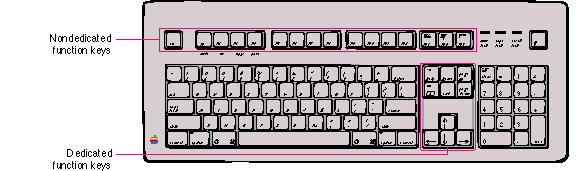

|
Function KeysSome Macintosh keyboards include function keys. There are two types of function keys, dedicated and nondedicated. The nondedicated function keys--labeled F1 through F15--are definable by the user, not by the application. F1 through F4 represent Undo, Cut, Copy, and Paste in any applications that use these commands.The six dedicated function keys are labeled Help, Del, Home, End, Page Up, and Page Down. These keys are shown in Figure 10-13. Figure 10-13 The function keys  HelpPressing the Help key invokes any application help system that has been installed. This is equivalent to pressing Command-? (or Command-/). The sort of help available varies among applications. If a full contextual help system is not available, some sort of useful help screen should be provided.Forward Delete (Del)In most script systems, pressing Forward Delete performs a forward delete: the character following the insertion point is removed, shifting everything following the removed character one character position back. The effect is that the insertion point remains stable while it "vacuums" the character or selection ahead of it.You can support the keyboard combination Option-Forward
Delete to If Forward Delete is pressed when there is a current selection, it has the same effect as pressing Delete (Backspace) or choosing Clear from the Edit menu. HomePressing the Home key is equivalent to moving the scroll boxes all the way to the top of the vertical scroll bar and to the left end of the horizontal scroll bar. (Note that the Home key may operate differently in a spreadsheet application; it won't necessarily scroll horizontally and it may scroll to the beginning of a row or to the beginning of the spreadsheet itself.) Pressing the Home key has no effect on the location of the insertion point or any selected material.EndPressing End is the opposite of pressing Home: it's equivalent to movingthe scroll boxes all the way to the bottom of the vertical scroll bar and to the right end of the horizontal scroll bar. (Note that the End key may operate differently in a spreadsheet application; it won't necessarily scroll horizontally and it may scroll to the end of a row or to the end of the spreadsheet itself.) Pressing End has no effect on the location of the insertion point or any selected material. Page UpPressing Page Up is equivalent to clicking the mouse in the upper gray region of the vertical scroll bar. Pressing Page Up has no effect on the location of the insertion point or any selected material.Page DownPressing Page Down is equivalent to clicking the mouse in the lower gray region of the vertical scroll bar. Pressing Page Down has no effect on the location of the insertion point or any selected material. |